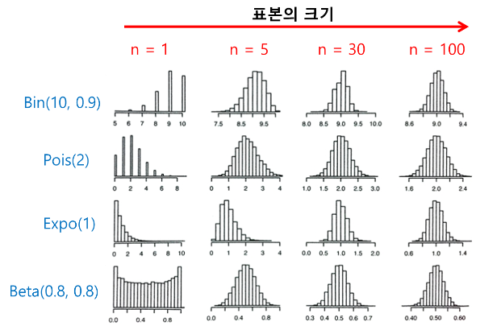

Autosaving every 20 secondsBackground
용어정리
- (표본)통계량(statistics,sample statistics) : 확률표본으로부터 계산되며 표본의 특성을 나타내는 값.
- 추정량(estimator) : 모수를 추정할 수 있는 (표본)통계량.
- 추정값 : 관측한 표본으로부터 계산한 추정량의 값.
정규분포
- 확률변수 \(X \sim \mathcal{N}(\mu,\sigma^2)\)라 하자.
\[ \begin{aligned} &P(\mu - 2\sigma \leq X \leq \mu + 2\sigma) \approx 0.95 \\ \end{aligned} \]
즉, 평균으로부터 +- 2표준편차인 구간안에 확률변수 X가 값을 가질 확률이 약 95%이다.
이 외에도 표준정규분포표나 다양한 라이브러리를 통하여 확률과 그 확률에 대응하는구간을 구할 수 있다.
통계적 추정
- 모집단의 특성값인 모수(parameter)가 우리가 알고싶은 것이다.
- 전북대학교 남학생들의 평균 성적 등등…
- 통계적 추정 : 확률표본을 사용하여 모집단의 모수 추정 e.g. 모평균,모비율
- 예를 들자면?
- 모평균의 추정 : 확률표본으로부터 계산된 표본평균을 추정량으로 사용
- 모비율의 추정 : 확률표본으로부터 계산된 모비율을 추정량으로 사용.
추정량의 성질
추정량의 임의성
- 추정량은 표본으로부터 모집단으로부터 표본이 임의적으로(random) 추출되기 때문에 임의성(randomness)를 갖는다.
예시
- 10만명으로 구성된 선거구, A 후보를 지지하는 사람이 6만명, 지지하지 않는 사람이 4만명인 모집단.
- i.e. 모집단의 크기 \(N=100000\), 지지율 \(\theta = 0.6\)
- 모집단 생성
N = 100000 #모집단의 크기
favor = 60000 #지지하는 유권자의 수
opposite = N - favor
P = np.concatenate((np.ones(favor),np.zeros(opposite)),axis=0)
P.shape(100000,)- 모비율 확인
- 표본 추출
array([1., 1., 1., 0., 1., 1., 1., 0., 1., 1., 1., 0., 0., 1., 1., 1., 0.,
1., 1., 0., 0., 1., 1., 0., 1., 1., 0., 0., 0., 1., 1., 0., 1., 0.,
0., 1., 1., 1., 1., 1., 1., 0., 1., 1., 1., 0., 0., 0., 0., 0., 1.,
1., 1., 1., 0., 1., 1., 1., 0., 0., 1., 1., 1., 0., 1., 0., 0., 0.,
0., 0., 1., 0., 1., 0., 1., 0., 0., 1., 1., 0., 1., 1., 0., 1., 0.,
1., 0., 1., 1., 1., 1., 1., 1., 0., 1., 0., 1., 0., 1., 1.])- 표본비율 계산
- 표본을 또 한번 추출하여 표본비율 계산
- 추출할 때마다 다른 표본이 뽑히므로 추정량의 값(추정값)이 변화한다.
- 그런데 각각 값들은 모집단의 지지율인 0.6과 아주 많이 차이나진 않는다.
추정량의 평균
추정량은 임의적이기 때문에 표본을 관측하기 전 까지는 알 수 없다.
표본을 관측하면 추정량의 값을 구할 수 있으며 이 값을
추정값(estimate)이라고 한다.서로다른 여러개의 표본으로부터 각각 계산된 추정값들의 평균\(\bar\theta\)은 어떻게 될까?
i.e. \[\bar\theta = \frac{\sum_{i=1}^{1000}\hat\theta_i}{1000}\] (추정값들이 1000개 있다고 하자.)
B = 1000 # 모의실험의 횟수
n = 1000
estimates = pd.DataFrame({'sample_rate':np.zeros(B)})
for i in np.arange(B):
sample = np.random.choice(P, n, replace=False)
estimates.loc[i,'sample_rate'] = np.mean(sample)
estimates| sample_rate | |
|---|---|
| 0 | 0.591 |
| 1 | 0.603 |
| 2 | 0.624 |
| 3 | 0.597 |
| 4 | 0.582 |
| ... | ... |
| 995 | 0.604 |
| 996 | 0.592 |
| 997 | 0.608 |
| 998 | 0.610 |
| 999 | 0.596 |
1000 rows × 1 columns
- 모의 실험으로부터 얻은 1000개의 추정값들의 평균은 모집단의 지지율 0.6과 매우 유사하다.
\[\bar\theta = \frac{\sum_{i=1}^{1000}\hat\theta_i}{1000} \approx \theta\]
중심극한정리
- 추정량의 분포를 한 번 살펴보자.
추정량의 분포는 0.6을 중심으로 종모양의 정규분포처럼 보인다.(잘보면 보임ㅎ)
사실 이는 추정량의 분포가 정규분포를 따른다는 중심극한정리에 의한 내용이다.
::;{.callout-note} #### 중심극한정리(Central Limit Theorem) \(X_1,X_2,\dots,X_n \overset{\text{i.i.d}}{\sim} f_X(x;\mu,\sigma^2)\)라고 하자. 이때 아래와 같은 식이 성립한다. \[\bar X = \frac{X_1 + X_2 + \dots + X_n}{n} \sim \mathcal{N}(\mu,\frac{\sigma^2}{n})\] 일반적으로 \(n \geq 30\)이라고 가정한다. :::
쉽게 풀어쓰자면 - 평균이 \(\mu\)이고, 분산이 \(\sigma^2\) 인 모집단에서 n개의 표본을 추출하는 경우에 n이 충분히 크면( n ≥ 30 ,i.i.d) - 모집단의 분포에 관계없이 표본평균 \(\bar X\)가 정규분포를 따르며 - 그때의 \(E(\bar X) = \mu, Var(\bar X) = \frac{\sigma^2}{n}\)라는 의미이다. - point - 정규분포에서 추출 안해도 정규분포가 됨(모집단이 뭘 따르던 상관 X) - i.i.d가정이 필요(고전적인 CLT) - 다른 CLT도 있는데 그건 같은분포에서 추출 안해도 된다고 함.독립이기만 하면 됨.(wiki 참고 ㄱㄱ)

- 위의 그림이 잘 설명해줌
- 이항분포던,푸아송이던 … 어떤 분포던지간에 표본의 크기가 충분히 크면
- 표본평균의 분포는 정규분포임을 확인
추정량의 분포
- 표본비율(추정량,표본지지율)의 분포를 구해보자.
- 중심극한정리에 의하면 다음과 같다.
\[ \begin{aligned} \hat\theta \sim \mathcal{N}(\mu(=\theta),\frac{\sigma^2}{n}) \end{aligned} \]
- 우리가 모르는 것은 우리가 정말 궁금한 \(\mu\)와 분산인 \(\sigma^2\)이다.
- \(\frac{\sigma^2}{n}\)은 우리가 여러개의 표본으로부터 얻은 추정값들로 어떻게든 구해볼 수 있을 것 같다.
- \(\hat\theta_1,\hat\theta_2,\hat\theta_3\ \dots\)들의 표본분산으로 구하면 될 것 같다.
- 여러개의 추정값들로 그러면 \(\mu\)도 구할 수 있는 것 아니냐?라는 의문이 생기는데??
- 이 경우 \(\mu = E(\hat\theta) \approx\) 표본평균 이라고 생각히가 때문이다.
- 잘 모르겠다. 하지만 책에서 분산만 일단 전개하므로 여기서도 분산만 가지고 전개.
- 즉 아래와 같이 표본분산으로 추정할 수 있을 것 같다.
\[ \begin{aligned} &Var(\hat\theta) = \frac{\sigma^2}{n} \approx \frac{\sum_{i=1}^{n}(\hat\theta_i - \bar\theta )^2}{n-1} \text{ (sample variance)}\\ &\Longleftrightarrow Sd(\hat\theta) = \frac{\sigma}{\sqrt{n}} \approx \sqrt{\frac{\sum_{i=1}^{n}(\hat\theta_i - \bar\theta )^2}{n-1}}\text{(sample standard deviation)}\\ &\text{where, } \bar\theta = \frac{1}{n}\sum_{i=1}^{n}\hat\theta_i \end{aligned} \]
- 결과적으로 표본비율의 분포는 아래와 같다고 할 수 있을 것이다.
\[ \begin{aligned} \hat\theta \sim \mathcal{N}(\mu(=\theta),Sd^2) \end{aligned} \]
구간추정
- 점추정은 하나의 특정 값으로 모수를 추정하는 방법이였다. 하지만 단점이 있다.
- 추정이 얼마나 정확한가,불확실한가를 판단하기가 불가능하다.
- 하나의 값을 제시하기에 유연하지 못하고 틀릴 가능성이 높음
- 이러한 단점을 보완할 수 있는 방법은 구간추정(interval estimation)이
- 구간추정은 모수에 다한 구간(신뢰구간)과 확률(신뢰도)을 제시하는 추정이며 점추정에 비해 장점이 있음.
- 구간을 사용하여 더 유연+견고한 주장을 제시할 수 있음(하나의 값 제시하는게 아니라 ~사이에 있을거다라고 말하는 것이기 때문)
- 확률을 제시해 추정이 얼마나 정확한가 제시할 수 있다.(확률 95%,80%로 불확실성을 제시해줄 수 있다.)
- 목적
- 모수 추정
- 구간,확률을 제시하여 더 견고한 \(\to\)주장 + 불확실성을 제시하여 추정의 정확도 판단.
- 구간추정은 어떻게 하는가?(유도해보기)
(알고 있는 사실)
\[\hat\theta \sim \mathcal{N}(\mu,SD^2) \to P(\mu - 2SD \leq \hat\theta \leq \mu + 2SD) = 0.95\text{ (그냥 equal로 놓자.)}\]
(식 살짝 바꾸기)
\[ \begin{aligned} &P(\mu - 2SD \leq \hat\theta \leq \mu + 2SD) = 0.95 \nonumber \\ &\Longleftrightarrow P(-2SD\leq \hat\theta-\mu \leq +2SD) = 0.95 \nonumber \\ &\Longleftrightarrow P(-\hat\theta-2SD \leq -\mu \leq -\hat\theta+2SD) = 0.95 \nonumber \\ &\Longleftrightarrow P(\hat\theta-2SD \leq \mu \leq \hat\theta+2SD) = 0.95 \nonumber \\ &\Longleftrightarrow P(\mu \in [\hat\theta-2SD,\hat\theta+2SD]) = 0.95 \\ &\Longleftrightarrow P(|\mu - \hat\theta| \leq 2SD) = 0.95 \\ \end{aligned} \]
- 윗 식을 해석해보면?
- 모수 \(\mu\)가 우리가 관측한 추정량 \(\hat\theta \pm 2SD\)인 구간에 속할 확률이 95%다.
- 모수 \(\mu\)와 우리가 관측한 추정량 \(\hat\theta\)의 차이가 \(2SD\)보다 작을 확률이 95%다.
- 결과적으로 모수를 추정함과 동시에 더 유연한 주장 + 불확실성 제시(목적달성).
- 왜 추정량의 분포를 알아야 했던거지?
- 확률표본은 모집단으로 부터 임의적으로 추출되기때문에 나타날 수 있는 오차를 추정량의 분포를 이용하여 제시!
- 용어정리
- 95%는 신뢰수준
- 2SD는 표본오차(sampling error)
- 위에서 나온 구간은 신뢰구간 이라고 함.
- “모평균 \(\mu\)에 대한 신뢰수준 95%에 대한 신뢰구간은 \([\hat\theta-2SD,\hat\theta+2SD]\)이다”라고 표현.
AVG= float(estimates.mean()) # B개의 지지율의 평균
SD = float(estimates.std()) # B개의 지지율의 표준편차
sim_summary = pd.DataFrame({ 'Mean of sample_rates': [AVG], 'SD' : [SD], 'Sampling Error' : [2*SD] })
sim_summary| Mean of sample_rates | SD | Sampling Error | |
|---|---|---|---|
| 0 | 0.49992 | 0.01581 | 0.031619 |
정리
- 모집단은 관심이 있는 전체 집단이다,모수는 모집단의 특성값이다.
- 확률표본은 모집단의 구성원이 표본에 속할 확률을 미리 알고 있으며 그 확률에 따라서 추출한 표본이다.
- 표본 자료의 분포는 모집단의 분포와 유사하게 나타난다.
- 추출된 표본으로 부터 얻은 추정량의 값이 모수와 얼마나 차이가 나는지는 알 수가 없다.
- 하지만 표본의 크기가 커질수록 \(\to\) SD가 감소 \(\to\) 추정량의 값은 모수에 가깝게 나타날 가능성(확률)이 높아진다.
- 또한 표본의 크기가 크면 추정량의 분포는 정규분포와 매우 유사하다.(by CLT)
- 따라서 추정량의 분포에 대한 성질을 정규분포의 성질을 이용하여 말할 수 있다.(by CLT)
- 추정량의 표준편차를 SD 라고 하면 추정량의 값과 모수의 차이가 2*SD 이내일 확률은 약 95% 이라고 말할 수 있다.(by CLT + 정규분포 확률)